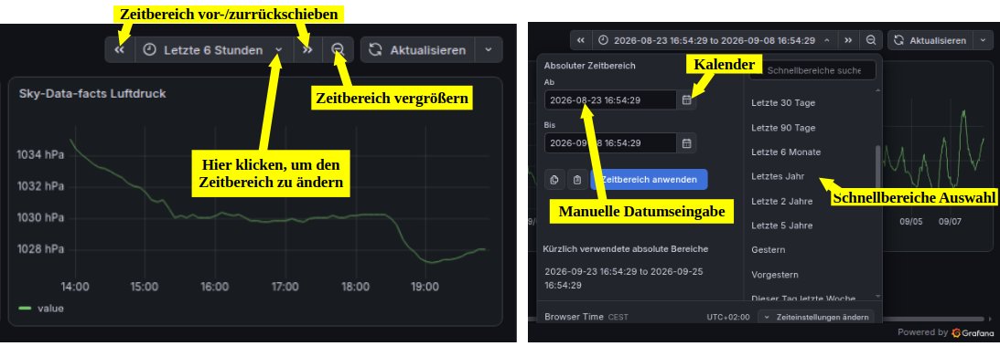

Sky-Data-facts!
 Besucherzähler
Besucherzähler
Wetteraufzeichnungen Essel/Lange Feldweg
(Koordinaten: 52.686110°, 9.641058°)
Livebild – Wetterstation
Kamerastatus wird geladen …
Die Kamera läuft höchstens 15 Minuten je Aktivierung. Nach Ablauf folgt eine zweistündige Sperre. Wenn zwei Minuten lang niemand zuschaut, schaltet sie sich früher ab.
Kamerastatistik
Serverseitige Gesamtzähler. Es werden keine Besucherprofile oder IP-Adressen gespeichert. Ein Klickversuch entspricht einer Anfrage an die Kamera-Steuerungs-API, nicht zwingend einer einzelnen Person.
Aufzeichnungsbeginn: Temperatur 25.062026 Luftdruck 12.10.2026
Schnellerklärung (Anleitung)

Zeitbereich markieren (Zoom)

Eine Person, die mitten in einem Gewässer steht
Die drei Gollinos Teil1
Zum Abspielen auf die Wiedergabetaste im Video klicken.
Die drei Gollinos Teil2
Zum Abspielen auf die Wiedergabetaste im Video klicken.
Urlaubsgrüße von Gollino2
Zum Abspielen auf die Wiedergabetaste im Video klicken.
Dialog
Zum Abspielen auf die Wiedergabetaste im Video klicken.